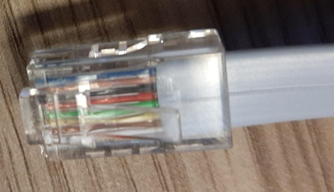
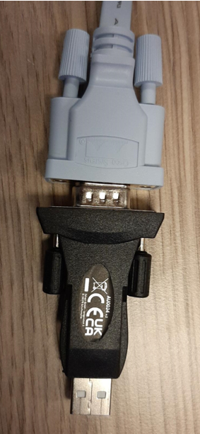
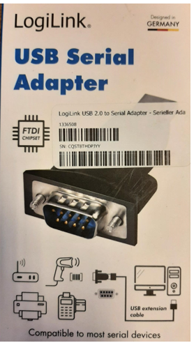

Wachtwoord reset Cisco SG300 met configuratie behoud
Wachtwoord reset Cisco SG300 met configuratie behoud
Inhoud
##Wat heb je nodig
Laptop met COM poort of een USB naar COM poort converter voor je laptop (zie bijlage 1).
COM poort kabel (zie bijlage 1)
Fysieke toegang tot switch
Putty.exe
##Putty configureren voor juiste connectiviteit
Neem de instellingen over volgens de afbeeldingen


LETOP: Zorg dat je de juiste COM poort selecteert het is mogelijk
wanneer je gebruik maakt van een USB naar comport adapter deze wijzigt,
dit kun je nakijken in je apparaat beheer, zie
afbeelding.
Klik op Open en de seriële sessie naar de switch wordt gestart.
Procedure wachtwoord resetten
Houdt de sessie met putty open
Haal de stroomkabel uit de switch
Doe de stroomkabel weer in de switch
Let goed op het scherm van putty want je zult snel moeten handelen, lukt het niet dan zal de switch opnieuw aan en uit gezet moeten worden.
Wanneer je de stroom weer op de switch zet, zie je in putty het volgende scherm verschijnen, druk snel op enter en maak daarna de keuze 3 gevold door een enter.


De switch wordt herstart, laat de switch rustig booten todat je de host naam van de switch ziet bijvoorbeeld WA-SW11>
Wanner je de host naam van de switch ziet staan zullen er enkele commando's uitgevoerd moeten worden.
Type: enable gevold door enter
Type copy startup-config running-config gevolgd door enter
De switch gaat nu de huidige configuratie opslaan zodat er geen instellingen kwijt raken.
Wanneer dit klaar is zie je weer de host naam van de switch staan type dan het volgende in:
Type: config gevold door enter
Type: username cisco password xxxxxxxxxxxx (xxxxxxxxx staat voor het wachtwoord wat je de switch wilt geven) gevold door enter
Type: exit gevold door enter
Type: write gevold door enter
Er wordt dan gevraagd of je de startup config wilt overschrijven type in de Y van yes.
Dit duurt even en wanneer deze klaar is zult je de host naam van de switch weer zien staan.
Type reload gevolgd door een enter waarna de switch gaat rebooten.
Wanneer de switch klaar is met rebooten zal deze het door jouw opgegeven wachtwoord hebben gekregen zonder dat de configuratie van de switch is veranderd.
##Bijlage 1 Fotos COM-kabel
Het is een standaard COM-kabel die is voorzien van een serial-USB-converter.


